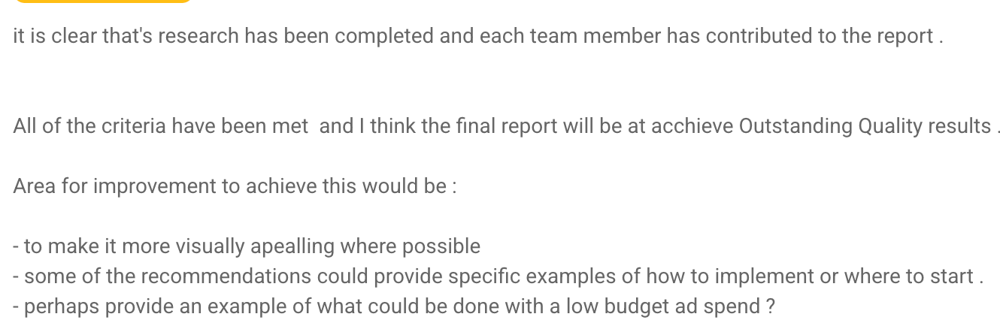
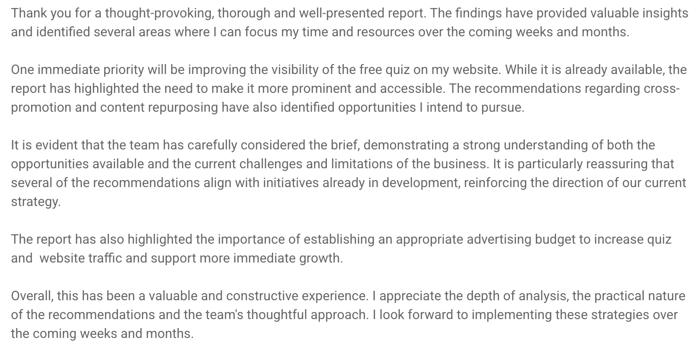

Skill 02 of 04
Service Orientation
Understanding what a client actually needs, not only what they ask for.
Context
In a university client consulting project, my team analysed a client’s social media presence and competitors. Before dividing tasks, we communicated with the client to understand their needs and expectations.
Evidence of development
After reviewing our first draft, the client confirmed that all criteria had been met, but suggested making the report more visually appealing and adding more specific implementation examples, including a low-budget advertising example. This showed that meeting the stated criteria was not the same as meeting the client’s practical needs.

Areas for improvement: visual appeal, specific examples, a low-budget ad example

“…the importance of establishing an appropriate advertising budget…”
Link to the project
Critical reflection
Dacre Pool and Sewell (2007) include emotional intelligence, the capacity to recognise and respond to others’ needs, as an essential component of their model, and note its growing importance in customer-facing work where human interaction is central. Service orientation, in these terms, depends on reading the client’s situation accurately.
Our team had discussed practical recommendations but judged them unrealistic within the client’s limited budget and preferences, so we left them out without checking with the client. The client’s request for a low-budget example suggests that a smaller option within these limits was what they actually wanted: we had read the constraint, but not the need behind it.
In future projects, I would offer a scaled-down option within the stated constraints and confirm our assumptions with the client at the draft stage.